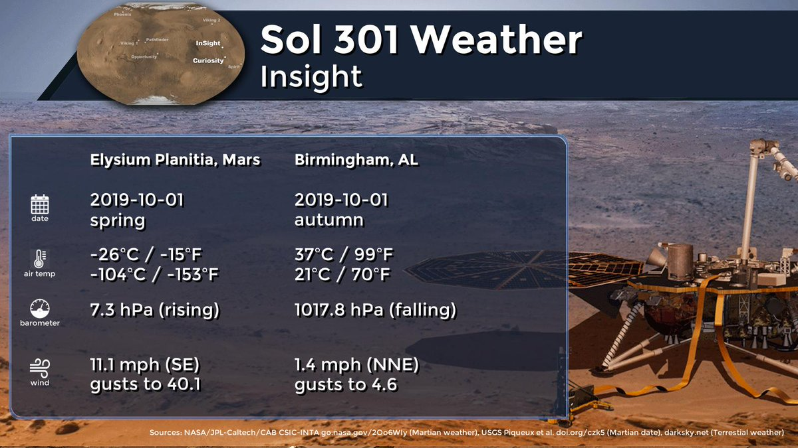
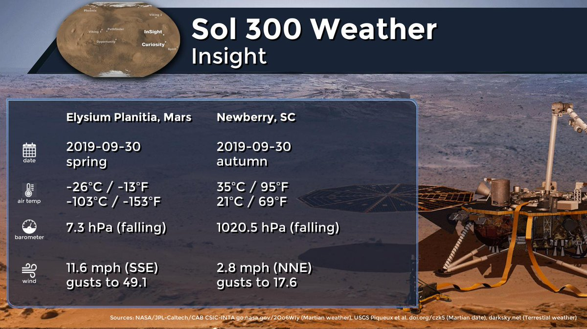
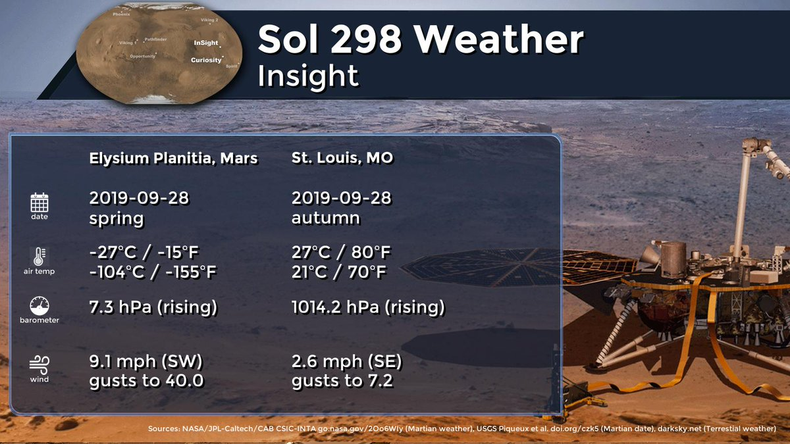
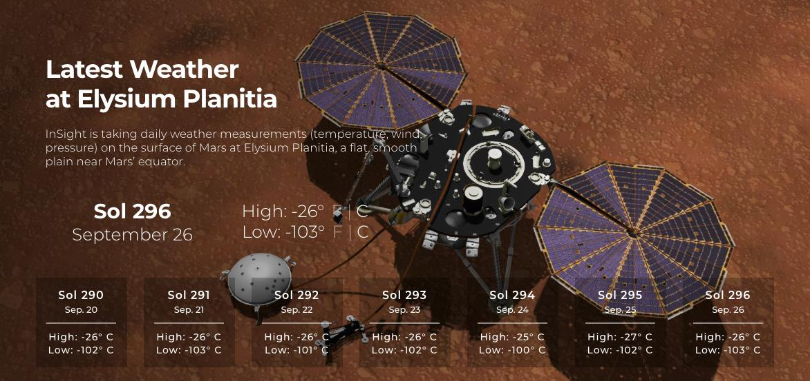
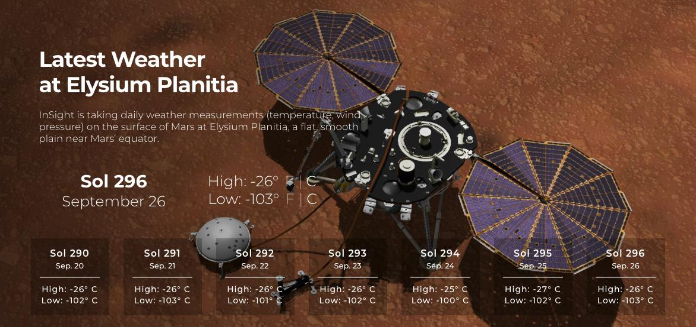
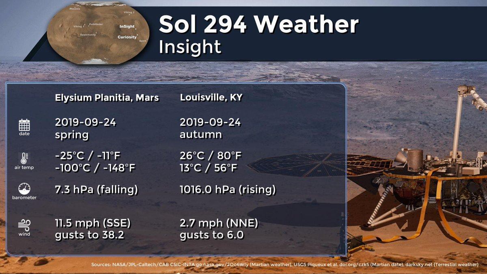
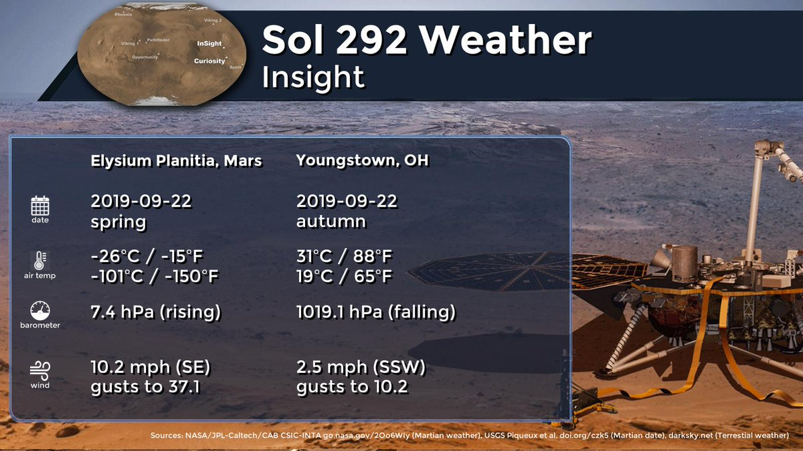

Tweets
- Tweets, current page.
- Tweets & replies
- Media
You blocked @MarsWxReport
Are you sure you want to view these Tweets? Viewing Tweets won't unblock @MarsWxReport
-
InSight sol 301 (2019-10-01) low -103.9ºC (-155.0ºF) high -26.4ºC (-15.5ºF) winds from the SE at 5.0 m/s (11.1 mph) gusting to 17.9 m/s (40.1 mph) pressure at 7.30 hPapic.twitter.com/Mm4WQrmwZr
Thanks. Twitter will use this to make your timeline better. UndoUndo -
InSight sol 300 (2019-09-30) low -103.2ºC (-153.7ºF) high -25.6ºC (-14.1ºF) winds from the SSE at 5.2 m/s (11.6 mph) gusting to 22.0 m/s (49.1 mph) pressure at 7.30 hPapic.twitter.com/bIfhUmZheS
Thanks. Twitter will use this to make your timeline better. UndoUndo -
InSight sol 299 (2019-09-29) low -101.3ºC (-150.3ºF) high -27.7ºC (-17.8ºF) winds from the SSE at 4.7 m/s (10.6 mph) gusting to 17.3 m/s (38.8 mph) pressure at 7.30 hPa
Thanks. Twitter will use this to make your timeline better. UndoUndo -
Mars Weather Retweeted
Martian sounds alert! I’m equipped with a very sensitive “ear.” My seismometer has been listening for
#marsquakes and has picked up other interesting signals as well. Grab your headphones and take a listen. More sounds here: http://go.nasa.gov/2nDjEb1 pic.twitter.com/cp8lQkgdyvNASA JPLListen to NASA's InSight at Work on MarsThanks. Twitter will use this to make your timeline better. UndoUndo
More sounds here: http://go.nasa.gov/2nDjEb1 pic.twitter.com/cp8lQkgdyvNASA JPLListen to NASA's InSight at Work on MarsThanks. Twitter will use this to make your timeline better. UndoUndo -
Thanks. Twitter will use this to make your timeline better. UndoUndo
-
InSight sol 298 (2019-09-28) low -104.1ºC (-155.5ºF) high -26.8ºC (-16.3ºF) winds from the SW at 4.1 m/s (9.1 mph) gusting to 17.9 m/s (40.0 mph) pressure at 7.30 hPapic.twitter.com/vSIwstlCUg
Thanks. Twitter will use this to make your timeline better. UndoUndo -
Mars Weather Retweeted
Time is running out to send your name to Mars aboard the 2020 rover, https://go.nasa.gov/2Wlf4gT read more at
#WRAL https://www.wral.com/send-your-name-to-mars-or-name-the-mars-rover/18665551/ …pic.twitter.com/8oOji4Eb8CThanks. Twitter will use this to make your timeline better. UndoUndo -
Mars Weather Retweeted
Parker Solar Probe telemetry again being impacted by weather, but not rain this time, wind. Goldstone having gusts of up to 60km/h, enough to knock the antenna slightly off point at K-band. Video shows the dot being predicted and the triangles actual antenna angles.
@NASASunpic.twitter.com/yurjiab7v8Thanks. Twitter will use this to make your timeline better. UndoUndo -
Mars Weather Retweeted
Seasons are changing on
#Mars, just like on Earth. I’m heading into my first summer here (but not expecting the kind of summer temps you’re probably used to!). Latest weather: http://mars.nasa.gov/insight/weather pic.twitter.com/qaNa8BarruThanks. Twitter will use this to make your timeline better. UndoUndo
Latest weather: http://mars.nasa.gov/insight/weather pic.twitter.com/qaNa8BarruThanks. Twitter will use this to make your timeline better. UndoUndo -
InSight sol 297 (2019-09-27) low -103.7ºC (-154.7ºF) high -26.1ºC (-15.0ºF) winds from the SSE at 5.4 m/s (12.0 mph) gusting to 18.0 m/s (40.2 mph) pressure at 7.30 hPapic.twitter.com/vp5YUgo4ya
Thanks. Twitter will use this to make your timeline better. UndoUndo -
This ship, christened the RocketShip today, will bring the Mars2020 rover’s ride to space to Cape Canaveral next yearhttps://twitter.com/torybruno/status/1177720872708165634 …
Thanks. Twitter will use this to make your timeline better. UndoUndo -
InSight sol 296 (2019-09-26) low -102.9ºC (-153.2ºF) high -26.4ºC (-15.5ºF) winds from the SSE at 5.1 m/s (11.5 mph) gusting to 18.2 m/s (40.7 mph) pressure at 7.30 hPapic.twitter.com/N3UuNIqFhF
Thanks. Twitter will use this to make your timeline better. UndoUndo -
InSight sol 295 (2019-09-25) low -102.1ºC (-151.8ºF) high -26.6ºC (-15.9ºF) winds from the SSE at 4.9 m/s (11.0 mph) gusting to 17.9 m/s (40.0 mph) pressure at 7.30 hPa
Thanks. Twitter will use this to make your timeline better. UndoUndo -
Mars Weather Retweeted
The last transmission from Mars Pathfinder, the first mission which transported a rover on the Red Planet, Sojourner, was exactly 22 years ago
#Today https://go.nasa.gov/2ytrUdd pic.twitter.com/SD2HvyGvDfThanks. Twitter will use this to make your timeline better. UndoUndo -
InSight sol 294 (2019-09-24) low -100.4ºC (-148.7ºF) high -24.8ºC (-12.7ºF) winds from the SSE at 5.1 m/s (11.5 mph) gusting to 17.1 m/s (38.2 mph) pressure at 7.30 hPapic.twitter.com/s1hhdk3gdF
Thanks. Twitter will use this to make your timeline better. UndoUndo -
InSight sol 293 (2019-09-23) low -102.0ºC (-151.7ºF) high -26.4ºC (-15.5ºF) winds from the SSE at 5.0 m/s (11.1 mph) gusting to 19.1 m/s (42.8 mph) pressure at 7.40 hPa
Thanks. Twitter will use this to make your timeline better. UndoUndo -
InSight sol 292 (2019-09-22) low -101.2ºC (-150.1ºF) high -26.4ºC (-15.6ºF) winds from the SE at 4.6 m/s (10.2 mph) gusting to 16.6 m/s (37.1 mph) pressure at 7.40 hPapic.twitter.com/CNzfmrrN6P
Thanks. Twitter will use this to make your timeline better. UndoUndo -
InSight sol 291 (2019-09-21) low -103.4ºC (-154.2ºF) high -26.5ºC (-15.7ºF) winds from the W at 4.2 m/s (9.3 mph) gusting to 17.2 m/s (38.4 mph) pressure at 7.40 hPa
Thanks. Twitter will use this to make your timeline better. UndoUndo -
Congratulations to the
@NASAInSight and@NASAJPL public engagement and digital news teams for their Emmy win for coverage of the InSight mission landing, well earned! https://www.jpl.nasa.gov/news/news.php?feature=7500 …pic.twitter.com/lFm5KbsT13Thanks. Twitter will use this to make your timeline better. UndoUndo -
InSight sol 290 (2019-09-20) low -102.1ºC (-151.7ºF) high -26.1ºC (-15.0ºF) winds from the SW at 4.4 m/s (9.9 mph) gusting to 17.5 m/s (39.2 mph) pressure at 7.40 hPapic.twitter.com/G4YzwsN5bs
Thanks. Twitter will use this to make your timeline better. UndoUndo

Loading seems to be taking a while.
Twitter may be over capacity or experiencing a momentary hiccup. Try again or visit Twitter Status for more information.

Want to take advantage of all the new Twitter features?
Worldwide trends
-
#DollarVampire
A freaky tiki rum cocktail served with vampire fangs and a cherryPromoted by Applebee's
-
#NationalBoyfriendDay
279K Tweets
-
#ChopOn
9,564 Tweets
-
Jacob Wohl
46.1K Tweets
-
James Franco
Two women are suing James Franco for alleged sexual exploitation and fraud
-
#RELENTLESS
23.4K Tweets
-
Keuchel
2,049 Tweets
-
#NLDS
13.2K Tweets
-
#SignsYoureNotVeryPopular
10.5K Tweets
-
Donaldson
2,890 Tweets